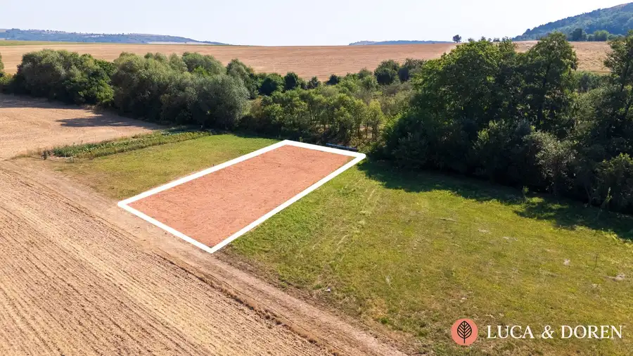
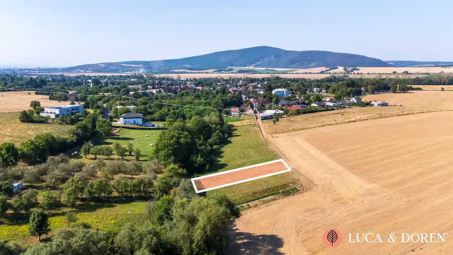
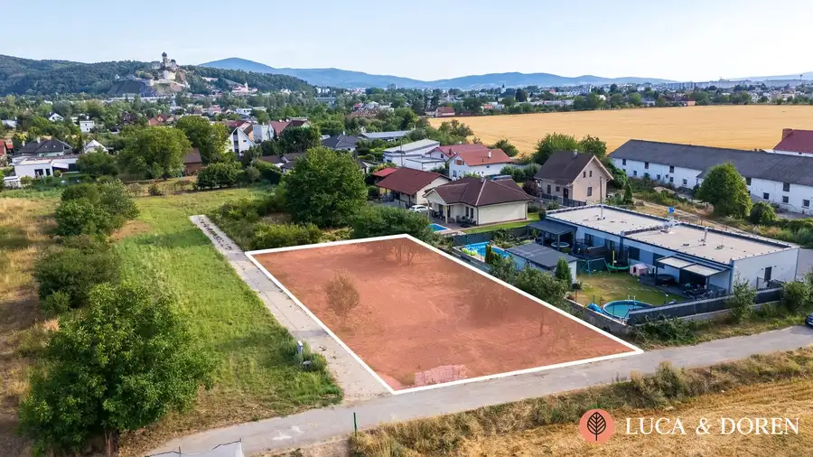
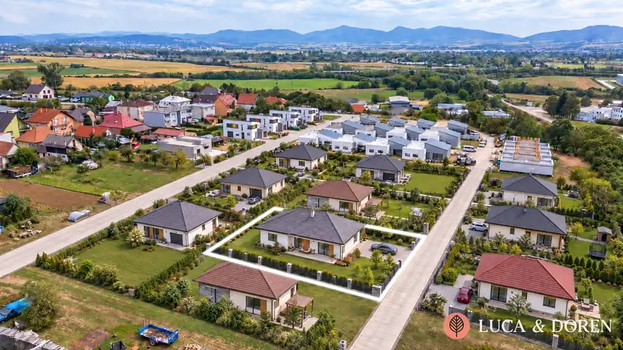

LUCA & DOREN | Na predaj | Pozemok | Dolné Srnie | 649 m² | Blízko mesta Nové Mesto nad Váhom
Dolné Srnie


- Plocha649 m²
O nehnuteľnosti
LUCA & DOREN Vám ponúka na predaj slnečný a rovinatý pozemok s výmerou 649 m², situovaný v pokojnej lokalite obce Dolné Srnie, len približne 9 minút autom od Nového Mesta nad Váhom.Ak hľadáte miesto pre výstavbu svojho nového domova, ktoré spája pokoj vidieckeho bývania s výbornou dostupnosťou do mesta, táto ponuka môže byť pre Vás správnou voľbou.Pozemok má rozmery približne 15,5 × 45 metrov, vďaka čomu poskytuje vhodné proporcie na výstavbu rodinného domu. Jeho rovinatý charakter a slnečná orientácia zároveň predstavujú praktické benefity pri plánovaní budúceho bývania a záhrady.ZÁKLADNÉ INFORMÁCIE* výmera pozemku: 649 m²* rozmery: približne 15,5 × 45 m* rovinatý a slnečný charakter* pokojná lokalita obce Dolné Srnie* približne 6,2 km / 9 minút autom od Nového Mesta nad Váhom* zabezpečený prístup k pozemkuÚZEMNOPLÁNOVACIA INFORMÁCIAPodľa územnoplánovacej informácie (ÚPI) obce Dolné Srnie sa pozemok nachádza v zóne s funkčnou náplňou obytného územia s prevahou plôch pre bývanie v rodinných domoch.Táto skutočnosť spolu s výmerou, rozmermi a charakterom pozemku vytvára vhodné predpoklady pre jeho budúce využitie na výstavbu rodinného domu.Bližšie informácie k možnostiam využitia pozemku a dostupnú dokumentáciu Vám radi poskytneme na vyžiadanie.INŽINIERSKE SIETE A PRÍSTUP* prístupová cesta priamo k pozemku* možnosť napojenia na inžinierske siete v dosahuLOKALITA A MOŽNOSTI VYUŽITIADolné Srnie ponúka príjemné prostredie pre tých, ktorí preferujú pokojnejšie bývanie mimo mesta, no nechcú sa vzdať jeho dobrej dostupnosti. Nové Mesto nad Váhom je vzdialené približne 9 minút jazdy autom, vďaka čomu máte kompletnú občiansku vybavenosť pohodlne na dosah.Pozemok je vhodnou voľbou pre záujemcov, ktorí hľadajú priestor pre svoj budúci rodinný dom, ale môže predstavovať zaujímavú príležitosť aj z investičného hľadiska.KOMPLETNÝ SERVIS LUCA & DORENUvedená cena je konečná a zahŕňa kompletný realitný servis – právne služby, prípravu zmluvnej dokumentácie, administratívne poplatky a odborné finančné poradenstvo.V prípade záujmu Vám radi poskytneme bližšie informácie a dohodneme si osobnú obhliadku pozemku.Flavio Di SturcoLUCA & DOREN s. r. o.+421 949 583 966flavio@lucadoren.sk
Parametre
- Druh
- Pozemok pre rodinné domy
- Dátum zverejnenia
- 12. 08. 2026
- Dĺžka pozemku
- 45
- Elektrina
- Nedostupné
- Funkčné využitie
- Výstavba rodinného domu
- Odpadové vody
- Nedostupné
- Plocha pozemku
- 649 m²
- Plyn
- Nedostupné
- Pripravenosť k výstavbe
- Schválené v územnom pláne
- Terén pozemku
- Rovinatý
- Typ
- Predaj
- Voda
- Nedostupné
- Šírka pozemku
- 15.5
Kde to je


Mohlo by Vás zaujímať

PozemokNové 144 000 €LUCA & DOREN | Na predaj | Pozemok | Trenčín - Zamarovce | 848m2 | Atraktívny výhľad na Trenčiansky hrad Zamarovce 848 m²
PozemokNové Cena na vyžádáníLUCA & DOREN | Na predaj | Pozemok | Chocholná-Velčice | 609 m2 | 13 minút do Trenčína Chocholná-Velčice 609 m²